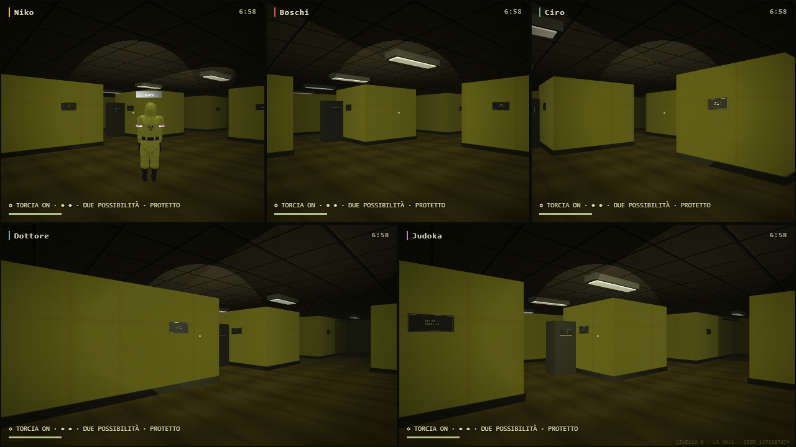
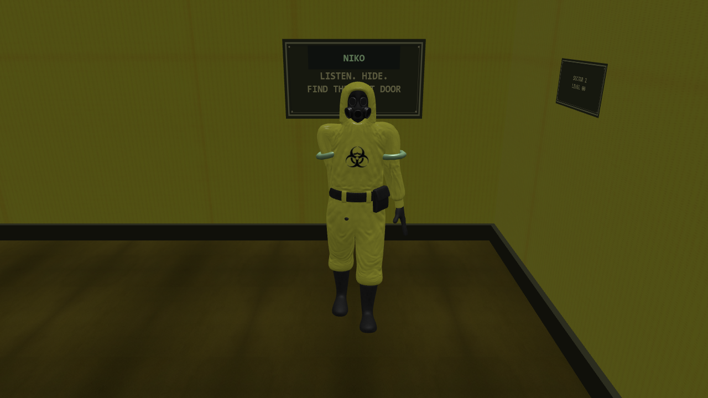
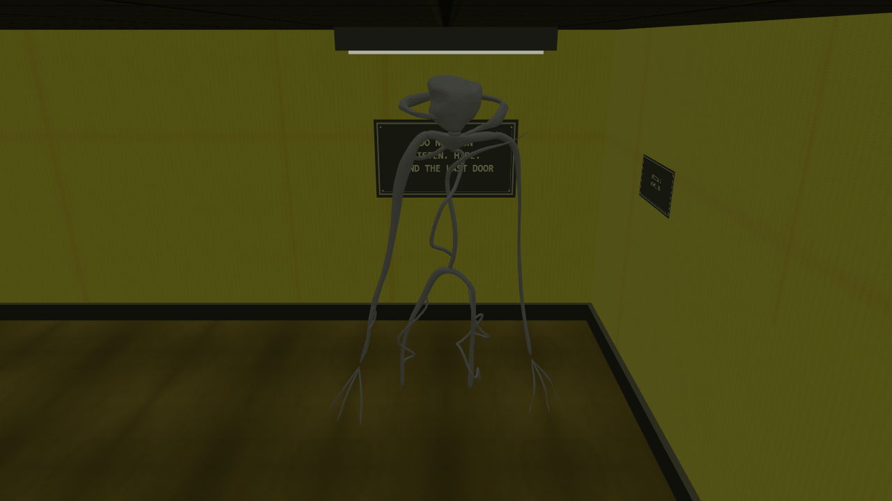
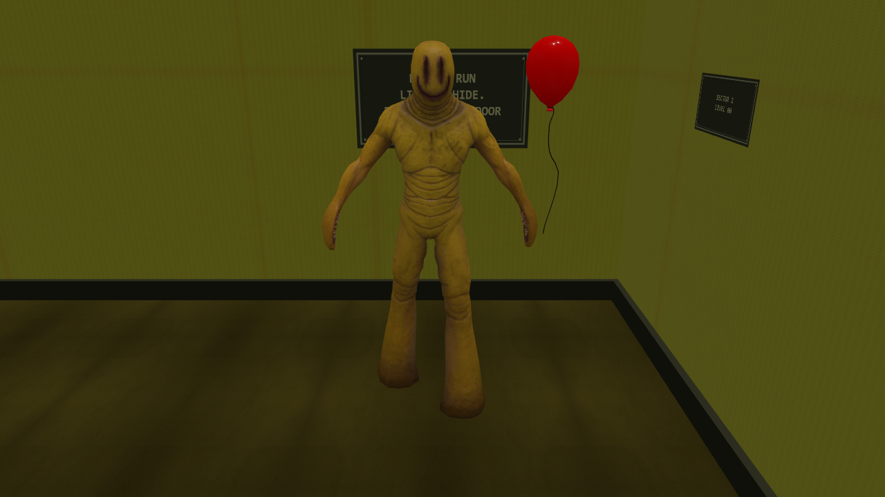
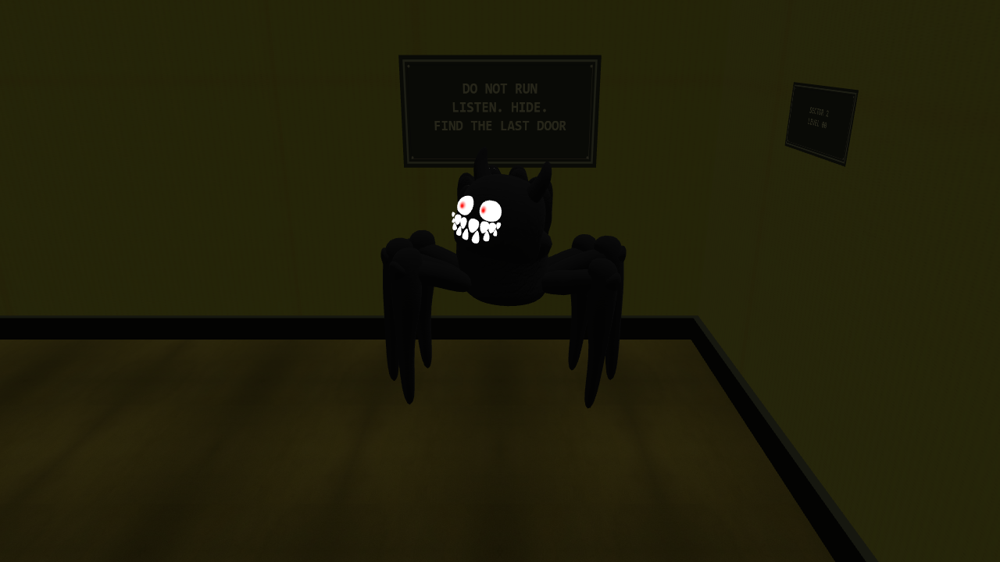
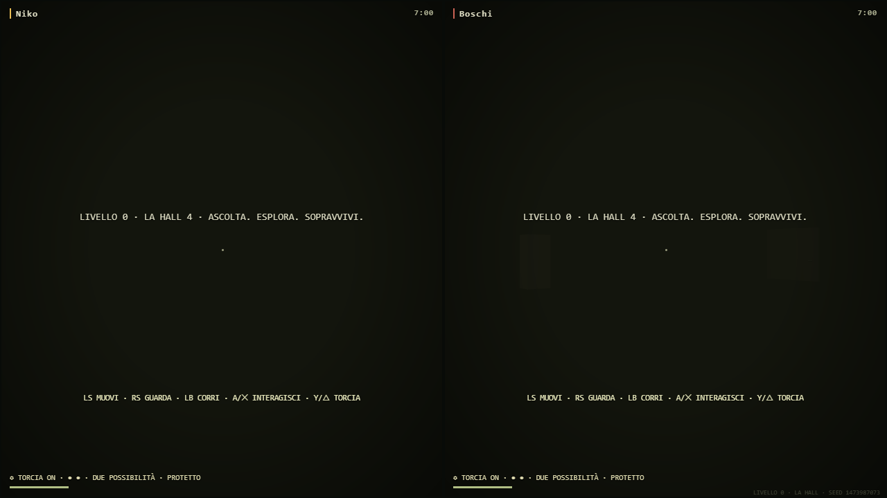

PARTY GAME · THE NIGHTMARE UPDATEAscolta. Nasconditi.
Trova l'ultima porta.
Sei asset integrati nel minigioco: esploratori Hazmat, tre creature con comportamenti distinti e moduli originali per labirinti più vari. Restano fuga, chiave, puzzle, due possibilità e classifica.
6 assetgeometrie e rig originali59,5 FPScampione breve · cinque visuali13,2 MiBcopie runtime ottimizzate
RTX 3050, 1280×720, seed 7, qualità alta, risoluzione fissa: 14,7 → 59,5 FPS dopo la correzione delle torce. p95 da 83,5 a 16,8 ms. Il campione di 180 frame non garantisce prestazioni identiche su ogni dispositivo o in ogni incontro.

Cinque visuali indipendentiLobby procedurale: materiali ripuliti e torce per ciascuna camera.
Esploratori HazmatRig originale articolato, nome e bande colorate.
BacteriaParti originali animate e ricerca basata su vista e udito.
PartygoerPalloncino riconoscibile, esca sonora e scatto breve.
SmilerOcchi e sorriso emissivi, corpo scuro e reazione limitata alla luce. Controllo del modello in luce ridotta.
Due giocatoriLa mappa mantiene dimensioni 17×17; per quattro o cinque sale a 21×21.Bacteria sente i rumori e perde il bersaglio; Partygoer tende un'esca prima del breve assalto; Smiler arretra per poco se illuminato correttamente. I vecchi mostri restano disponibili.
Torcia: Y/△ oppure pulsante sul telefono. Prima cattura: ritorno dopo 7 secondi, con protezione temporanea. Seconda cattura: eliminazione.